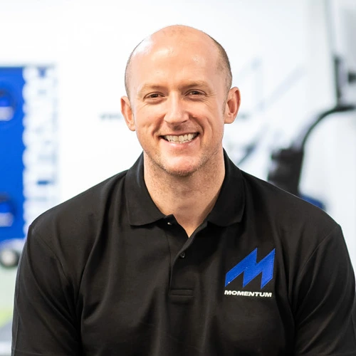
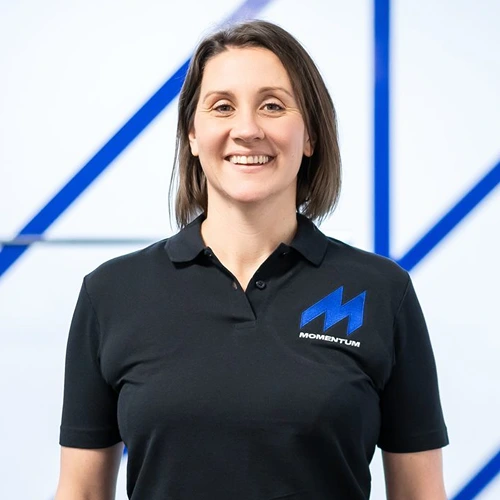

About Footscan Centre Ponteland
An independent, local clinic dedicated to foot health — built around clear communication and genuine clinical expertise.
Why we started Footscan Centre
Footscan Centre Ponteland was founded to bring hospital-grade foot scanning technology into a friendly, local clinic setting. Too often, foot pain gets brushed off or treated with generic insoles that don't address the underlying cause.
We wanted to build somewhere that combined proper diagnostic technology with the time and care to actually explain what's going on — and a plan that's realistic for daily life, not just the clinic.
Today we work with runners, walkers and anyone whose feet or lower-limb pain are holding them back from being comfortable on their feet.
What guides how we work
Clear communication
We explain your scan results in plain language, with a written summary you can keep, refer back to or share with your GP.
Evidence-based care
Every recommendation is grounded in your actual scan data and current clinical guidance — never a one-size-fits-all fix.
Genuine care
We're a small, local practice — you'll see a familiar face at every appointment and never feel like a number.
Our practitioners
Footscan, Phits Orthotics and Biomechanical Assessments are delivered by the team at Momentum Sports Injury Clinic, including:

Carl Bell
Physiotherapy Manager, HCPC & CSP Reg.Carl trained in Applied Health and Exercise Science before qualifying in Physiotherapy. He began his career in the NHS before moving into specialist practice, working with the UK's elite forces, senior athletes and Olympians across sports including bobsleigh, rugby, football and rowing. He has a particular focus on rehabilitation and exercise progression, and is a keen long-distance runner and adventure racer.
Book with Carl →
Kate Disley
Sport Rehabilitator, BASRaTKate holds an MSc (Distinction) in Sports Rehabilitation and is a Graduate Sport Rehabilitator and member of BASRaT, with over 18 years' experience since graduating in 2004 working with elite runners, rugby teams and everyday patients alike. She has a particular interest in biomechanics and running performance, and also teaches APPI Pilates for back pain and sports performance.
Book with Kate →Bios and photos sourced from Momentum Sports Injury Clinic's team pages — worth confirming current wording with Momentum before publishing.
Come and meet the team
Book your first appointment today and see for yourself what makes Footscan Centre Ponteland different.